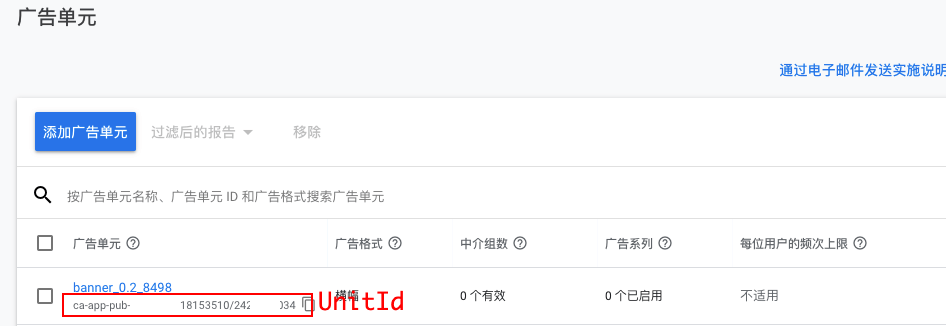

iOS完整集成admob教程（2021）
Admob是谷歌推出的广告服务，其中包含的广告类型有：banner、插屏、激励、开屏（最近添加的）。利用Admob的中介组可以引入其他广告商的广告，比如FaceBook、unity等10多家平台。对于出海的App集成Admob是非常必要的变现手段。
到公众号【iOS开发栈】学习更多SwiftUI、iOS开发相关内容。
通过Cocoapods导入Admob SDK
通过Cocoapods导入SDK是最简单的方法，如果不知道Cocoapods的使用方法可以看一下官方文档。在Podfile中添加一行代码：
1 | pod 'Google-Mobile-Ads-SDK' |
之后在终端执行命令行：
1 | pod install --repo-update |
修改主工程的info.plist文件
在主工程的info.plist文件中添加两个键值对：
GADApplicationIdentifier对应的是你的app在Admob申请到的App ID。SKAdNetworkItems对应的是一个固定的cstr6suwn9.skadnetwork。
1 | <key>GADApplicationIdentifier</key> |
添加之后的info.plist效果：
关于注册Admob账号和获取App ID的内容可以到Admob的官方网站查看。
初始化Admob SDK
在AppDelegate中添加初始化Admob SDK的代码
1 | @import GoogleMobileAds; |
1 | import GoogleMobileAds |
到这里，我们就可以根据需要来在App的不同位置添加需要的广告类型了。
因为类型比较多，这里如果分别介绍的话篇幅就太长了。所以在这篇文章只说一下需要注意的地方，详细的集成方法可以到Admob开发官网查看。
各种Admob广告类型的最佳实践方案
不同类型的Admob广告适用于不同的场景，按照场景放广告不仅更能被用户接受，而且对广告营收有一定的益处。相反，如果不按照推荐方法来展示广告有可能会被广告商警告，严重的话可能会被禁止投放（我们就被Facebook警告了）。
- Banner广告是那种长条状的横幅形式，建议放在屏幕的边缘处，对于手机屏幕建议放在屏幕的最上面或者最下面。
- 插屏广告是一种全屏展示的广告，可能是一张图片或者一个视频，只有用户点击关闭按钮是才会关闭。这种广告对用户打扰非常大，建议放在界面切换的时候才展示这种广告，并且不能在push到一个新页面以后再展示，比如说不能在到一个新页面后网络请求服务端的过程中展示这个广告。
- Native广告（原生广告）是一种比较特殊的广告形式，它通过SDK来实现广告加载，加载到的是广告的一些组件（文字、图片、视频），我们可以自定义组件的展示位置和大小。这种广告适合用在启动图或者列表（UITableView/UICollectionView）中。
- 激励视频广告是一种可以让用户通过观看广告获取App内奖励的广告形式，在游戏类App中十分常见。在弹出这种广告前一定要让用户选择是否要通过看广告获取“更多奖励”。
使用Admob中介组聚合多个平台广告
谷歌广告平台不仅有自家的Admob广告还有很多其他广告平台的资源，我们在集成了Google-Mobile-Ads-SDK的基础上通过添加不同平台的中介组（Mediation）来快速获取不同平台的广告。
在这里我们仅以集成Facebook的广告为例做一下说明，其他平台的广告也都大同小异。如果在集成过程中有什么问题也可以到公众号“iOS开发栈”问我。
在Podfile文件中添加Admob SDK和Facebook的中介组：
1 | pod 'Google-Mobile-Ads-SDK', |
之后在终端切换到项目所在目录，并执行
1 | cd <当前项目目录> |
安装完Admob SDk和FB的广告中介组以后，就可以直接使用对应的广告形式了。对应广告形式的使用方式可以到上一节查看，这里不再赘述。
这里有一点需要强调的是在初始化不同的广告形式需要调用initWithAdUnitID:方法，这里的UnitID是广告但愿ID，可以在Admob的管理后台->广告单元页面查看。

到公众号【iOS开发栈】学习更多SwiftUI、iOS开发相关内容。回复“博客”免费获取各大互联网公司面试题。
总结
谷歌的Admob服务和其他广告商相比文档更加全面（不过文档中也可能有错误），社区也非常活跃（我曾经提过一个问题，很快可以得到回复）。这篇文章是我在使用过程中的一些总结，里面除了基础的集成方法外，大都是使用过程中的注意事项，至于详细的集成过程推荐到官方文档中查看。如果你有任何的问题、建议都可以通过微博或邮件联系到我本人。